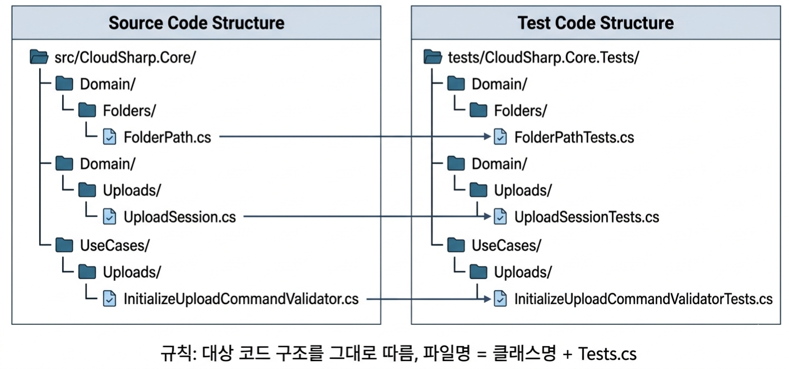

CloudSharp 유닛 테스트 가이드¶
NUnit, Bogus, FluentResults 기반으로 반복 가능하고 읽기 쉬운 테스트를 작성하는 규칙
1. 목적¶
1.1 대상 범위¶
이 문서는 유닛 테스트, 특히 CloudSharp.Core.Tests를 기준으로 한다.
tests/
├── CloudSharp.Core.Tests/ ← 이 문서의 주 대상
├── CloudSharp.Infrastructure.Tests/
├── CloudSharp.Api.IntegrationTests/
└── CloudSharp.Architecture.Tests/
1.2 핵심 목표¶
- 테스트 이름만 보고 무슨 결과를 검증하는지 알 수 있어야 한다
- 조건은 테스트 이름이 아니라 케이스(
TestCase,TestCaseSource) 로 표현한다 - 성공과 실패를 한 테스트 안에서 bool로 합치지 않고, 테스트 메서드 자체를 분리한다
- 외부 인프라에 의존하지 않는 반복 가능하고 결정적인 테스트를 작성한다
2. 핵심 원칙¶
| 원칙 | 설명 |
|---|---|
| 순수 유닛 테스트는 외부 인프라를 쓰지 않는다 | PostgreSQL, Redis, tusd, 파일 시스템, 네트워크 금지 |
| 테스트 이름은 결과 중심으로 짓는다 | MethodName_ShouldExpectedResult |
| 성공/실패/상태변경은 테스트 메서드를 분리한다 | bool 하나로 합쳐서 검증하지 않는다 |
단순 조건은 [TestCase]로 표현한다 |
문자열, 숫자, enum, bool, 경계값 |
복잡한 조건은 [TestCaseSource]로 분리한다 |
객체, 배열, 긴 입력, 설명이 필요한 경우 |
| 테스트 본문은 AAA로 작성한다 | Arrange → Act → Assert |
Assertion은 Assert.That만 사용한다 |
NUnit constraint model 스타일 통일 |
| Bogus는 deterministic하게 사용한다 | seed 고정 |
| 실패 검증은 문자열보다 계약을 본다 | error code, metadata, 타입 우선 |
3. 패키지 기준¶
3.1 필수 패키지¶
<PackageReference Include="Bogus" Version="35.6.5" />
<PackageReference Include="Microsoft.NET.Test.Sdk" Version="17.14.0" />
<PackageReference Include="NUnit" Version="4.3.2" />
<PackageReference Include="NUnit.Analyzers" Version="4.7.0" />
<PackageReference Include="NUnit3TestAdapter" Version="5.0.0" />
3.2 설치 명령¶
dotnet add tests/CloudSharp.Core.Tests package Bogus
dotnet add tests/CloudSharp.Core.Tests package NUnit
dotnet add tests/CloudSharp.Core.Tests package NUnit.Analyzers
dotnet add tests/CloudSharp.Core.Tests package NUnit3TestAdapter
4. 테스트 파일 위치¶
4.1 규칙¶
테스트 파일은 대상 코드 구조를 그대로 따라간다. 파일명은 항상 대상 클래스명 + Tests.cs 로 한다.
4.2 대상 코드와 테스트 코드 대응¶

4.3 파일명 매핑¶
| 대상 클래스 | 테스트 파일 |
|---|---|
FolderPath |
FolderPathTests.cs |
UploadSession |
UploadSessionTests.cs |
InitializeUploadCommandValidator |
InitializeUploadCommandValidatorTests.cs |
CreateSpaceUseCase |
CreateSpaceUseCaseTests.cs |
5. 테스트 이름 규칙¶
5.1 기본 형식¶
테스트 메서드 이름은 다음 형식을 사용한다.
MethodName_ShouldExpectedResult
| 구간 | 의미 |
|---|---|
MethodName |
테스트 대상 메서드 |
ShouldExpectedResult |
기대 결과 |
5.2 예시¶
Create_ShouldReturnNull
Create_ShouldReturnFolderPath
Validate_ShouldHaveError
Validate_ShouldNotHaveError
FinalizeUpload_ShouldChangeStatusToCompleted
Reserve_ShouldReturnQuotaExceededError
5.3 이름에 넣지 않는 것¶
조건은 테스트 이름에 넣지 않는다. 조건은 [TestCase]나 [TestCaseSource]가 표현한다.
// ❌ 지양 — 조건이 메서드 이름에 들어감
Create_ShouldReturnNull_WhenValueIsEmpty
Create_ShouldReturnNull_WhenValueIsWhitespace
Create_ShouldReturnNull_WhenValueDoesNotStartWithSlash
// ✅ 권장 — 조건은 TestCase가 표현
[TestCase("")]
[TestCase(" ")]
[TestCase("documents")]
public void Create_ShouldReturnNull(string value)
5.4 성공/실패는 테스트 메서드를 분리한다¶
성공과 실패를 한 메서드에서 bool로 합치지 않는다.
// ❌ 지양 — 성공/실패를 bool로 합침
[TestCase("", false)]
[TestCase(" ", false)]
[TestCase("/documents", true)]
public void Create_ShouldReturnExpectedResult(string value, bool expectedSuccess)
// ✅ 권장 — 기대 결과별로 메서드 분리
[TestCase("")]
[TestCase(" ")]
[TestCase("documents")]
public void Create_ShouldReturnNull(string value) { ... }
[TestCase("/documents")]
[TestCase("/documents/contracts")]
public void Create_ShouldReturnFolderPath(string value) { ... }
이 방식은 테스트 의미가 명확하고, 실패 시 원인 파악이 빠르다.
6. 기본 구조 — Arrange, Act, Assert¶
6.1 원칙¶
모든 테스트는 Arrange → Act → Assert 구조를 따른다. 한 테스트는 하나의 핵심 행동만 검증한다.
6.2 예시¶
[TestCase("/documents")]
[TestCase("/documents/contracts")]
public void Create_ShouldReturnFolderPath(string value)
{
// Arrange
// value is provided by TestCase
// Act
var result = FolderPath.Create(value);
// Assert
Assert.That(result, Is.Not.Null);
Assert.That(result!.Value, Is.EqualTo(value));
}
7. TestCase 사용 규칙¶
7.1 적합한 대상¶
단순한 조건 변화는 [TestCase]를 사용한다.
| 대상 | 예시 |
|---|---|
| 문자열 경계값 | empty, whitespace, max length |
| 숫자 범위 | 0, -1, max + 1 |
| enum 상태 | Created, Uploading, Completed |
| boolean 조건 | true / false |
| 입력 몇 개만 달라지는 경우 | 파일명, 경로 등 |
7.2 작성 원칙¶
[TestCase]는 같은 기대 결과를 가지는 조건들을 묶는 용도로 사용한다.
// ✅ 실패 케이스끼리 묶음
[TestCase("")]
[TestCase(" ")]
[TestCase("documents")]
public void Create_ShouldReturnNull(string value)
{
var result = FolderPath.Create(value);
Assert.That(result, Is.Null);
}
// ✅ 성공 케이스끼리 묶음
[TestCase("/documents")]
[TestCase("/documents/contracts")]
public void Create_ShouldReturnFolderPath(string value)
{
var result = FolderPath.Create(value);
Assert.That(result, Is.Not.Null);
Assert.That(result!.Value, Is.EqualTo(value));
}
7.3 정리¶
| 규칙 | 설명 |
|---|---|
[TestCase]는 단순 조건을 표현한다 |
문자열, 숫자, enum, bool |
| 같은 기대 결과끼리 묶는다 | 성공은 성공끼리, 실패는 실패끼리 |
| 테스트 메서드는 결과 중심 | 조건은 TestCase 값이 설명한다 |
8. TestCaseSource 사용 규칙¶
8.1 적합한 대상¶
다음 경우에는 [TestCaseSource]를 사용한다.
| 경우 | 예시 |
|---|---|
| 객체를 입력으로 넣어야 하는 경우 | command, entity |
| 배열/컬렉션이 필요한 경우 | 역할 목록, ID 목록 |
| 긴 문자열/복잡한 조합이 필요한 경우 | 경로 조합, 파일명 패턴 |
| 케이스 설명이 중요한 경우 | 비즈니스 규칙별 설명 |
8.2 작성 원칙¶
복잡한 조건도 같은 기대 결과끼리 묶고, SetName(...)으로 컨텍스트를 드러낸다.
private static IEnumerable<TestCaseData> InvalidUploadSizes()
{
yield return new TestCaseData(0L)
.SetName("Size is zero");
yield return new TestCaseData(-1L)
.SetName("Size is negative");
yield return new TestCaseData(10L * 1024 * 1024 * 1024 + 1)
.SetName("Size exceeds max upload size");
}
[TestCaseSource(nameof(InvalidUploadSizes))]
public void Validate_ShouldHaveError(long sizeBytes)
{
// Arrange
var command = TestUploadCommands.Valid(sizeBytes: sizeBytes);
var validator = new InitializeUploadCommandValidator();
// Act
var result = validator.TestValidate(command);
// Assert
result.ShouldHaveValidationErrorFor(x => x.SizeBytes)
.WithErrorCode("UPLOAD_SIZE_INVALID");
}
8.3 규칙¶
| 규칙 | 이유 |
|---|---|
source 메서드는 private static |
테스트 fixture 상태와 분리 |
TestCaseData.SetName(...) 사용 |
실패한 케이스를 바로 식별 |
| 메서드 이름에는 조건을 다시 쓰지 않음 | 조건은 SetName이 담당 |
| source는 같은 기대 결과를 위한 조건 모음 | 결과별 테스트 분리 원칙 유지 |
9. Bogus 사용 규칙¶
9.1 적합한 용도¶
Bogus는 유효한 기본 입력 생성에 사용한다.
| 용도 | 예시 |
|---|---|
| command 기본값 생성 | InitializeUploadCommand |
| 도메인 입력 기본값 생성 | Space 이름, 파일명, 이메일 |
| 테스트마다 약간 다른 정상 입력 만들기 | 여러 User/Space fixture |
9.2 피해야 할 사용¶
| 피할 것 | 이유 |
|---|---|
| 경계값을 Bogus에 맡기기 | edge case가 테스트에 드러나지 않음 |
| 랜덤 값을 그대로 assert하기 | 테스트가 비결정적이 됨 |
| static mutable Faker 공유 | 테스트 순서에 따라 값이 흔들릴 수 있음 |
9.3 기본 패턴¶
private static Faker<InitializeUploadCommand> CreateFaker(int seed = 1)
{
return new Faker<InitializeUploadCommand>("ko")
.UseSeed(seed)
.CustomInstantiator(f => new InitializeUploadCommand(
SpaceId: f.Random.Guid(),
TargetFolderId: f.Random.Guid(),
RequesterUserId: f.Random.Guid(),
FileName: f.System.FileName(),
SizeBytes: f.Random.Long(1, 1024 * 1024 * 1024),
ContentType: "application/octet-stream"));
}
UseSeed(seed)를 사용해 테스트 입력을 재현 가능하게 만든다.
10. Test Data Builder 패턴¶
10.1 원칙¶
Bogus는 테스트 helper 뒤에 숨긴다. 테스트 본문에 faker 설정이 길게 들어가지 않게 한다.
10.2 디렉토리 구조¶
tests/CloudSharp.Core.Tests/
└── TestSupport/
├── Fakers/
│ └── UploadCommandFaker.cs
└── Builders/
└── TestUploadCommands.cs
10.3 Builder 구현 예시¶
using Bogus;
using CloudSharp.Core.UseCases.Uploads;
namespace CloudSharp.Core.Tests.TestSupport.Builders;
public static class TestUploadCommands
{
public static InitializeUploadCommand Valid(
Guid? spaceId = null,
Guid? targetFolderId = null,
Guid? requesterUserId = null,
string? fileName = null,
long? sizeBytes = null,
string? contentType = null,
int seed = 1)
{
var faker = new Faker("ko").UseSeed(seed);
return new InitializeUploadCommand(
SpaceId: spaceId ?? faker.Random.Guid(),
TargetFolderId: targetFolderId ?? faker.Random.Guid(),
RequesterUserId: requesterUserId ?? faker.Random.Guid(),
FileName: fileName ?? faker.System.FileName(),
SizeBytes: sizeBytes ?? faker.Random.Long(1, 1024 * 1024 * 1024),
ContentType: contentType ?? "application/octet-stream");
}
}
10.4 테스트에서의 사용¶
테스트에서는 필요한 값만 override한다.
[TestCase("")]
[TestCase(" ")]
public void Validate_ShouldHaveError(string fileName)
{
// Arrange
var command = TestUploadCommands.Valid(fileName: fileName);
var validator = new InitializeUploadCommandValidator();
// Act
var result = validator.TestValidate(command);
// Assert
result.ShouldHaveValidationErrorFor(x => x.FileName)
.WithErrorCode("UPLOAD_FILE_NAME_INVALID");
}
11. Validator 테스트 규칙¶
11.1 도구¶
FluentValidation validator는 FluentValidation.TestHelper를 사용한다.
11.2 원칙¶
| 규칙 | 설명 |
|---|---|
| 유효한 기본 command를 builder로 만든다 | 각 테스트는 깨뜨릴 값만 override |
| property별 validation error를 검증한다 | 전체 error count만 보는 테스트 지양 |
| error code까지 검증한다 | API/프론트 계약 유지 |
| 성공/실패는 테스트 메서드를 분리한다 | bool로 합치지 않는다 |
11.3 전체 예시¶
using CloudSharp.Core.Tests.TestSupport.Builders;
using CloudSharp.Core.UseCases.Uploads;
using FluentValidation.TestHelper;
namespace CloudSharp.Core.Tests.UseCases.Uploads;
public class InitializeUploadCommandValidatorTests
{
private readonly InitializeUploadCommandValidator _validator = new();
[Test]
public void Validate_ShouldNotHaveError()
{
// Arrange
var command = TestUploadCommands.Valid();
// Act
var result = _validator.TestValidate(command);
// Assert
result.ShouldNotHaveAnyValidationErrors();
}
[TestCase("")]
[TestCase(" ")]
public void Validate_ShouldHaveError(string fileName)
{
// Arrange
var command = TestUploadCommands.Valid(fileName: fileName);
// Act
var result = _validator.TestValidate(command);
// Assert
result.ShouldHaveValidationErrorFor(x => x.FileName)
.WithErrorCode("UPLOAD_FILE_NAME_INVALID");
}
}
12. FluentResults 테스트 규칙¶
12.1 원칙¶
Result를 반환하는 도메인/유스케이스는 다음을 검증한다.
- 성공 여부
- 실패 여부
- ErrorCode / Metadata / 에러 타입
- 상태 변화
문자열 메시지만 검증하지 않는다. 가능한 경우 ErrorCode나 에러 타입을 함께 검증한다.
12.2 이름 규칙¶
가능하면 ShouldFail보다 더 구체적으로 쓴다.
// ✅ 구체적인 결과를 이름에 표현
Reserve_ShouldReturnQuotaExceededError
// ❌ 너무 일반적
Reserve_ShouldFail
12.3 예시¶
[Test]
public void Reserve_ShouldReturnQuotaExceededError()
{
// Arrange
var policy = new SpaceQuotaPolicy(
allowedBytes: 100,
usedBytes: 90,
reservedBytes: 0);
// Act
var result = policy.CanReserve(20);
// Assert
Assert.That(result.IsFailed, Is.True);
Assert.That(
result.Errors[0].Metadata["ErrorCode"],
Is.EqualTo("UPLOAD_QUOTA_EXCEEDED"));
}
13. Mock 사용 기준¶
13.1 대상별 방식¶
순수 도메인 테스트는 mock을 쓰지 않는다.
| 대상 | 방식 |
|---|---|
| Value Object | 직접 생성 |
| Entity 상태 전이 | 직접 생성 후 메서드 호출 |
| Domain Policy | 직접 생성 |
| UseCase | port interface는 fake 또는 mock 사용 가능 |
| Repository | 유닛 테스트 대상 아님 — Infrastructure test로 분리 |
13.2 주의사항¶
UseCase에서 mock을 쓸 경우, 검증 대상은 mock 호출 횟수가 아니라 결과와 상태다.
// ✅ 결과를 검증한다
Assert.That(result.IsSuccess, Is.True);
Verify남용은 피한다. 외부 호출 자체가 핵심 계약일 때만 interaction 검증을 사용한다.
14. 시간과 랜덤값 규칙¶
14.1 원칙¶
시간과 랜덤값은 테스트가 흔들리는 주 원인이다. 테스트에서 DateTimeOffset.UtcNow를 직접 호출하지 않는다.
14.2 대상별 규칙¶
| 대상 | 규칙 |
|---|---|
| 현재 시각 | 고정값 또는 IClock fake 사용 |
| Guid 생성 | 테스트에서 명시하거나 Bogus seed 사용 |
| 랜덤 문자열 | Bogus seed 사용 |
| 만료 시간 | fixed now 기준으로 계산 |
14.3 예시¶
var now = new DateTimeOffset(2026, 4, 20, 0, 0, 0, TimeSpan.Zero);
var expiresAt = now.AddDays(7);
15. Assertion 규칙¶
15.1 스타일¶
NUnit의 Assert.That constraint model 스타일만 사용한다.
15.2 권장 패턴¶
// ✅ 권장
Assert.That(result.IsSuccess, Is.True);
Assert.That(result.Value.Name, Is.EqualTo("Team Space"));
Assert.That(items, Has.Count.EqualTo(2));
// ❌ 비권장
Assert.IsTrue(result.IsSuccess);
Assert.AreEqual("Team Space", result.Value.Name);
15.3 컬렉션 검증¶
Assert.That(
errors.Select(x => x.ErrorCode),
Does.Contain("SPACE_NAME_INVALID"));
15.4 예외 검증¶
var exception = Assert.Throws<InvalidOperationException>(() => action());
Assert.That(exception!.Message, Does.Contain("invalid state"));
단, 비즈니스 실패는 예외보다
Result.Fail검증을 우선한다.
16. 유닛 테스트에서 금지하는 것¶
CloudSharp.Core.Tests에서는 다음을 금지한다.
| 금지 항목 | 이유 |
|---|---|
| PostgreSQL 연결 | 유닛 테스트가 느리고 불안정해짐 |
| Redis 연결 | 외부 인프라 의존 |
| tusd 호출 | upload gateway / integration 영역 |
| 실제 파일 시스템 쓰기 | 경로/권한/OS 차이로 흔들림 |
| 네트워크 호출 | 재현성 저하 |
Thread.Sleep |
느리고 flaky한 테스트 |
필요하면
CloudSharp.Infrastructure.Tests또는CloudSharp.Api.IntegrationTests로 옮긴다.
17. 테스트 실행 명령¶
17.1 기본 경로¶
cd apps/backend
17.2 명령어¶
| 목적 | 명령 |
|---|---|
| Core 유닛 테스트 | dotnet test tests/CloudSharp.Core.Tests |
| 전체 테스트 | dotnet test |
| 상세 로그 | dotnet test tests/CloudSharp.Core.Tests --logger "console;verbosity=detailed" |
18. PR 체크리스트¶
| 항목 | 확인 내용 |
|---|---|
| 테스트 이름 | MethodName_ShouldExpectedResult |
| 기대 결과 분리 | 성공/실패/상태변경을 메서드 단위로 분리했는가 |
| 단순 조건 | [TestCase] 사용 |
| 복잡한 조건 | [TestCaseSource] + SetName(...) 사용 |
| 테스트 데이터 | builder/helper 사용, Bogus seed 고정 |
| Assertion | Assert.That 사용 |
| 외부 의존성 | DB/Redis/파일/네트워크 미사용 |
| 실패 검증 | message보다 error code/type 중심 |
| 실행 | dotnet test tests/CloudSharp.Core.Tests 통과 |
19. 요약¶
| 질문 | 답 |
|---|---|
| 테스트 이름 | MethodName_ShouldExpectedResult |
| 성공/실패를 한 테스트에 같이 넣나 | 아니오 — 메서드 단위로 분리 |
| 단순 조건 | [TestCase] |
| 복잡한 조건 | [TestCaseSource] + SetName(...) |
| 테스트 데이터 | Bogus + fixed seed + builder |
| Assertion 스타일 | Assert.That |
| Validator 테스트 | property / error code 검증 |
| FluentResults 테스트 | error code / metadata / 타입 검증 |
| 금지 | DB, Redis, 파일 시스템, 네트워크, tusd |
20. 전체 예시¶
이 컨벤션을 따른 전체 테스트 파일 예시다.
using CloudSharp.Core.Domain.Folders;
using NUnit.Framework;
namespace CloudSharp.Core.Tests.Domain.Folders;
public class FolderPathTests
{
[TestCase("")]
[TestCase(" ")]
[TestCase("documents")]
public void Create_ShouldReturnNull(string value)
{
// Arrange
// Act
var result = FolderPath.Create(value);
// Assert
Assert.That(result, Is.Null);
}
[TestCase("/documents")]
[TestCase("/documents/contracts")]
public void Create_ShouldReturnFolderPath(string value)
{
// Arrange
// Act
var result = FolderPath.Create(value);
// Assert
Assert.That(result, Is.Not.Null);
Assert.That(result!.Value, Is.EqualTo(value));
}
}